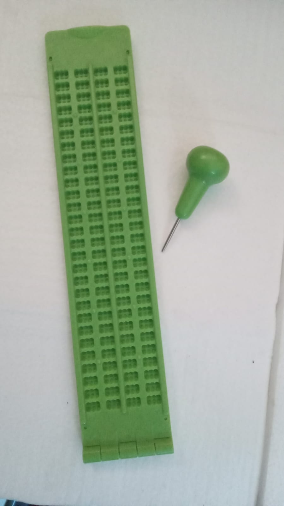
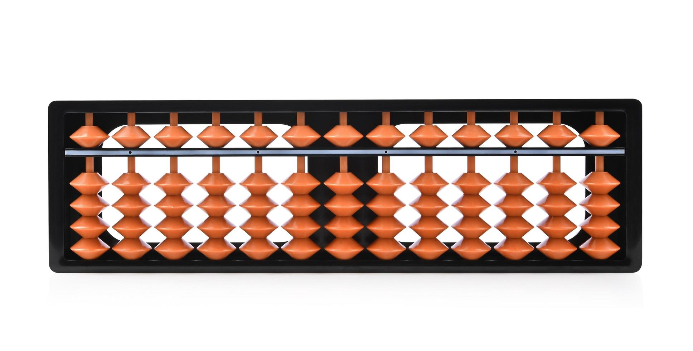

Reglete Negativa
A reglete negativa é uma ferramenta essencial para a escrita em Braille, permitindo a punção dos pontos de forma invertida, para que a leitura seja feita de forma correta e sem emendas.
Reglete Positiva

A reglete positiva é utilizada por estudantes e profissionais para a escrita em Braille de forma mais direta, com a punção dos pontos na mesma direção da leitura, proporcionando maior agilidade e praticidade.
Ábaco
O ábaco é um instrumento de cálculo fundamental para o desenvolvimento da matemática para pessoas cegas. Nosso ábaco foi projetado com pinos táteis e de alta durabilidade, garantindo precisão e facilidade de uso.